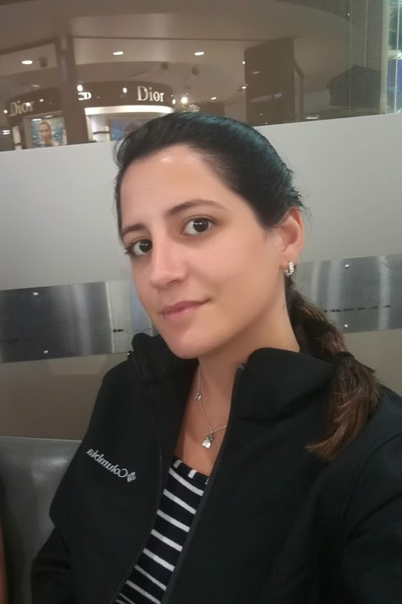

My Resume- Tal Moran

Work experience:
2023-Today: Project Manager
- Managing a development project E2E that has increased sales by consumer by 10%.
- Developed and fostered a relationship with Bolttech's biggest customer to identify and remove roadblocks.
- Managing priorities and budget for the customer while maintaining timelines for multiple projects simultaneously, throughout all projects’ phases.
- Managing deliverables for two development teams, customer-driven
- Develop project plans and timelines, with Gantt charts, improving project visibility.
2021-2023: Scrum Master / Team Lead
- Leading a multi-functional team composed of Full Stack developers, Engineers, and QA testers. Working in short-term sprints, delivering high-quality API integrations, product features, and new solutions for existing customers.
- Estimating, planning, and executing projects from first contact through development, QA testing, user acceptance tests, and going live.
- Supporting the Product team in improving product designs, ownership, and future content developments.
- All across-the-board communication with both vendors and customers, projects and product managers, Markets and R&D leads, supporting new and ongoing projects.
2018-2021: Business Analyst
- Working with known clients and 3rd party vendors in the US insurance industry - analyzing customer requirements and translating them into technical and analytical specifications.
- Writing Functional Specification Documents and Web Service mapping documents (XML).
- Analyzing production data for company clients monthly using various BI tools.
- Leading cross-platform changes, while cooperating with Dev and QA teams for requirements review and integration support.
Education:
- 2021- PMP certification from P.M academy
- 2015-2018: B.Sc in IT systems- Industrial Engineering management at "Afeka
Academic College in Tel Aviv".
Skills:
Office, SQL, JAVA, C#, SAP, MS Project, TFS, ODM, Monday.com, Figma
Languages:
Hebrew- Native, English- High.